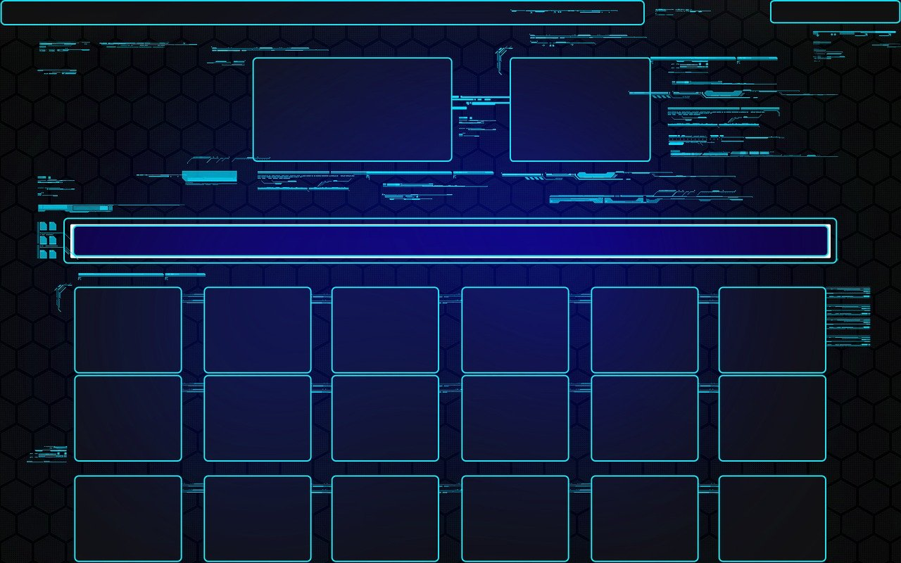

En este sitio web, usted podrá encontrar una investigación confiable de la Interfaz de Usuario y la Interacciòn Humano.
Interfaz de Usuario
La interfaz de usuario (UI) es el conjunto de los controles y canales sensoriales mediante los cuales un usuario puede comunicarse con una máquina. Por ejemplo, en una computadora, la pantalla, el teclado y las bocinas son parte de la interfaz de usuario porque la utilidad de todas ellas es hacer que entre o salga información del equipo.
Una buena interfaz de usuario se caracteriza por tener un alto grado de usabilidad, y por ser amigable e intuitiva.

Interacción Humano Ordenador
La Interacción Humano Ordenador se convirtió oficialmente en una disciplina con el advenimiento de la computadora personal, la gente empezó a darse cuenta de cómo esta transición afectará no sólo a su trabajo sino a sus vidas en general. Los PCs fueron lanzados con muchas nuevas características como procesadores de texto, facilidades de juego y ayudas de contabilidad. Con el tiempo, su nivel de sofisticación aumentó hasta el punto en que el objetivo era hacer que la interacción hombre-computadora se asemejara a la interacción entre humanos, de la forma más natural y sin fisuras posible.
HCI es un dominio interdisciplinario que abarca disciplinas como la informática, la ingeniería de los factores humanos, la inteligencia artificial, la lingüística, la filosofía, la antropología y la ciencia cognitiva.